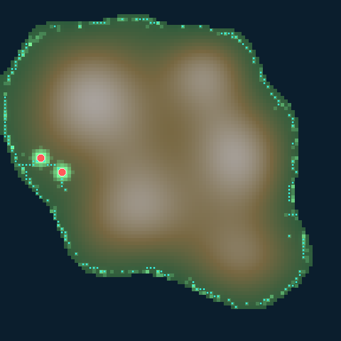
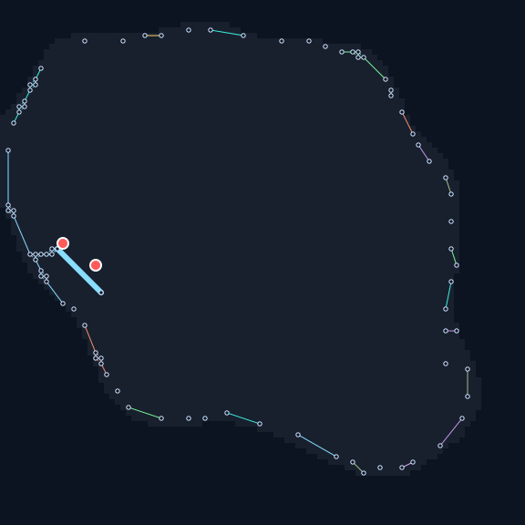

Jones 模型（trail マップ + 拡散・減衰）で粘菌の網を育てる、 最小・決定論・ヘッドレスなシミュレーションコア。 砂糖を置くと網が伸び、標高をソフトに避けながら島々に広がる。


仮想の日本列島（陸海マスク + 標高場 E）の上で、多数のエージェントが 誘引物質（trail）を残しながら歩き、拡散・減衰する場と相互作用して網を作る。 プレイヤーの動詞は「砂糖を置く／取り除く」だけ。砂糖に到達するとバイオマスが増え、 エージェント上限が上がり、網がさらに広がる——という園芸・観察型のモデル。
壁は作らない。高標高はソフトに避ける（① 感知ペナルティ ② 傾斜コスト ③ 定着差 ④ 減衰差 の4系統）。だから網は自然と低地を選んで伸びていく。
step(state, world, params, rng) → state'。同一 (初期状態, 入力列, params, seed) は必ず同一の最終状態とハッシュを生む。
乱数は state 内の単一シード付き PRNG（xoshiro256** 自前実装）のみ。壁時計や反復順など非決定的入力を遷移に使わない。
描画は state を読むだけ。描画 ON/OFF で final_state_hash は変わらない。この絵も「読むだけ」の派生。
run_headless(seed, input_script, ticks) が metrics.json と final_state_hash を出力。CI で回せる。
育った trail 網を Tero–Nakagaki の土俵に一度だけ乗せ、効率を数値化する静的レイヤ。適応則は回さない。State は読むだけ。
冗長度（total_length / mst_length）、コンダクタンス、輸送効率
（正規化エッジ流量の Herfindahl 指数）、エッジ加重平均標高などを
analysis.json に出力する。連結成分数は決定論コアの指標と一致する。
| 指標 | 値 | 意味 |
|---|---|---|
| coverage | 0.096 | 陸地に対する網の到達面積 |
| sugar_collected | 85.0 | 回収した砂糖の累計 |
| biomass | 54.9 | = 回収 − 消費（保存則） |
| n_agents | 281 | 成長ループでエージェント増（80→281） |
| flow_connected | true | 2砂糖源が連結（conductance 0.043） |
| nodes / edges | 86 / 69 | 抽出グラフの規模（redundancy 1.14） |
| edge_mean_elevation | 0.063 | 網の加重平均標高（陸地平均 0.45 より低い＝忌避が効く） |
| final_state_hash | 0xbc42a7c3… | 再現性の指紋（2回一致・3シード） |
# GNU ツールチェインで（自己完結リンカ）
cargo +stable-x86_64-pc-windows-gnu test # 不変条件+受け入れテスト
cargo run --release --bin run_headless -- 42 160 # metrics.json + hash
cargo run --release --bin run_analysis -- 42 160 # analysis.json
cargo run --release --bin render_svg -- 42 160 # この絵を生成std のみ）。PRNG も自前実装で完全決定論。